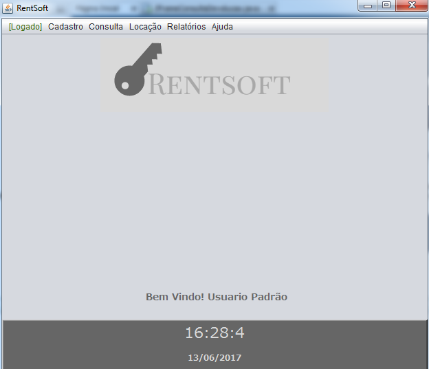
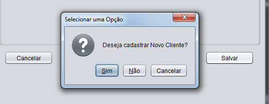
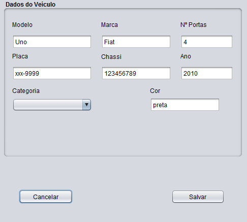
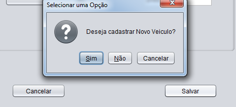
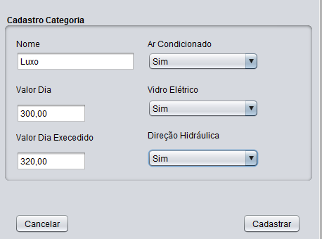
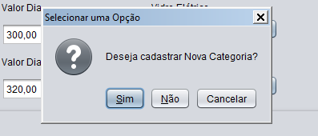
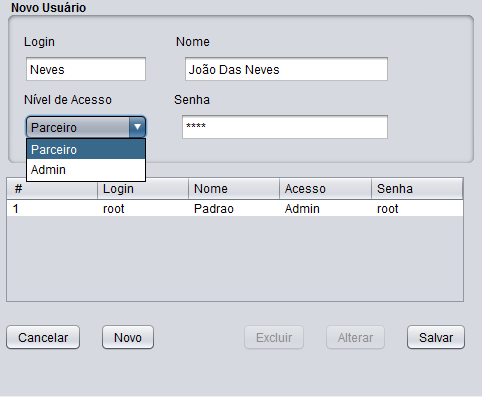

Introdução
Nesse manual, você usuário, terá a oportunidade de aperfeiçoar o seu conhecimento a cerca do uso do sistema Rentsoft. Ao término do mesmo, você está apto a acessar o sistema, desenvolver cadastros, consultas e relatórios do mesmo. Esse manual também serve como ferramenta de referência. Caso você precise tirar dúvidas pontuais sobre o sistema, clique em algum capítulo do indíce de navegação a sua escolha.
Login
Tendo aberto o sistema, verá que no centro aparecerá um painel em branco com o nome "Autenticação". Nesse painel, você fará acesso direto ao sistema pelo seu login e senha. No login e senha, coloque respectivamente nas caixas de texto que aparecem no painel e clique no botão a baixo, "Logar". Caso você não seja Admin, e ainda não tenha login e senha, fale com o administrador do sistema da sua empresa para obter a mesma.

Depois de efetuado o login, você estará de frente para o painel principal do sistema. É possível identificar uma barra de navegação, com os ícones: Logado, Cadastro, Consulta, Locação, Relatórios e Ajuda. Possível também identificar na parte superior direita, logo abaixo da barra de navegação, seu ícone de usário com uma menssagem calorosa de "Bem Vindo!". Na parte inferior do painel, também se encontra data e hora de sua localidade.
Logado
Clicando com o botão esquerdo do mouse em cima do ícone Logado, irá aparecer as opções "Deslogar" e "Sair". Escolhendo a opção com o botão esquerdo do mouse em "Deslogar", você voltará a página de login e clicando em "Sair", o sistema fechará. Verifique nas imagens a baixo.


Cadastro
Aqui, em Cadastro, é onde começa de fato o manuseio com o sistema. Nesse botão, algumas das funções mais importantes serão demonstradas para você. Clicando na mesma, você verá a aparecer as opções: Cadastrar Cliente, Cadastrar Veiculo, Cadastrar Categoria e Cadastrar Usuario.

Cadastar Cliente
Vamos fazer um tour primeiro, em cadastrar Cliente. Clicando no mesmo, abrirá uma tela com título "Dados Pessoais". Conseguimos ver no topo credenciais padrões para o cadastro do Cliente... Nome, CPF, RG, Data de Nascimento. Preencha esses espaços. No campo CPF e RG, não se preocupe com caracteres especiais, aqui você pode digitar apenas os números, sem problema. Quanto a data, coloque usando as barras nos espaçamentos "dia\mês\ano". Continuando, Coloque o email com todos os caracteres que ele comporta. Telefone, se atentando ao ddd e a quantidade correta de digitos. O mesmo para o Celular. Endereço e complemento livres, da forma correta que você achar. Cep, bairro e cidade, e UF da mesma forma (se atente ao caracter especial do cep, apenas). pronto, feito isso, o painel ficará completamente preenchido. Segue a baixo, uma imagem de exemplo...

Tendo feito isso, é hora de salvar esse Cliente. Logo abaixo, dois botões são visíveis, "Cancelar" e "Salvar"... Clicando em Cancelar, todos os campos de texto do painel serão apagados (o que teoricamente não queremos). Tente clicar em "Salvar". Após isso, uma menssagem de confirmação irá aparecer, perguntando se você quer confirmar, sim ou não. Clique em "sim", para confirmar, e depois em "Ok". Pronto, agora, o cliente está salvo. Veja a seguir, uma imagem exemplificando a situação. Você já pode clicar em "Cancelar" para sair do Painel de Cadastro Cliente.
Cadastrar Veiculo
Pronto, agora que você fez o primeiro cadastro, daqui pra frente os cadastros seguintes vão seguir o mesmo molde do "Cadastro Cliente", com algumas pequenas alterações que serão abordadas no decorrer. Tendo dito isso, mãos a obra. Abrindo o Cadastro Veiculo, notamos um painel parecido com o Cadastro Cliente. Nesse, os campos a vista são: Modelo, Marca, NºPortas, Placa, Chassi, Ano, Categoria e Cor. Preencha de acordo com os respectivos campos. Não precisa se preocupar com a Placa e caracter especial de espaçamento, apenas digite normalmente que tudo dará certo. Em categoria, apenas clique na caixa que aparecerão as possibilidades de preenchimento. Demonstração a baixo com a imagem.
A seguir, verifique a baixo do painel, os botões Salvar e Cancelar, do mesmo modo que o painel de Cadastro anterior. Clicando em Salvar, uma menssagem de confirmação irá aparecer, tendo a possibilidade de Sim e Não. Clique em Sim, e aperte Ok! Pronto, agora seu veículo foi cadastrado com sucesso. Observe na Imagem a baixo.
Cadastrar Categoria
Se você fez o Cadastro Veiculo pela primeira vez, notará que a aba categoria não demonstra nada. Nesse tópico, vamos está fazendo extamente uma categoria para o carro. Ao clicar em Categoria, você verá os seguintes campos no painel a sua frente... Nome, ValorDia, Valor dia Excedido, Ar Condicionado, Vidro Eletrico, Direção Eletrica. Cada dos respectivos espaços, devem ser preenchidos de acordo com o que se pede. O Nome, é o tipo da categoria. O Valar Dia, é o valo que dentro dessa categoria, esse carro terá. Valor, excedido, como o próprio menciona, é o Valor caso o dia de devolução seja ultrapassado. Ar Condicionado, Vidro Eletrico, Direção Eletrica são preenchidos com "Sim" "Não". Segue uma imagem de exemplo a baixo...
Tendo feito isso, você pode apertar em "Cadastrar", na parte inferior direita. Feito isso, aparecerá uma menssagem de confirmação, clique em sim. Depois, aparecerá uma menssagem caso você queira fazer outro cadastro, seendo assim clique em "Sim", se não clique em "Não" e você sairá desse painel de cadastro. Segue um exemplo a baixo.
Cadastrar Usuario
Agora, vamos Cadastrar um usuario. Caso você seja um funcionário faça isso junto com o seu Administrador. Ao abrir o cadastrar usuario você verá um painel com campos de texto Login, Nome, Nível de Acesso, Senha... Nesses campos, você preencherá as informações de acordo com cada um dos campos. Informando que o nível de Acesso define o papel do usario no sistema. Sendo Admin, ele tem acesso Marjarotário, sendo Parceiro, ele tem acesso limitado. Preenchido tudo, repare a baixo dos campos, aparece uma tabela onde será feito uma consulta simultânea, mostrando os usuarios já cadastrados. Mais a baixo, existe o botão Cancelar, Novo, Excluir, Alterar e Salvar. Novo cria uma instância possível pra criar um novo usuario. Excluir, deleta um usuario selecionado da tabela. Alterar, altera um usuario de acordo com a tabela, e Salvar, Salva os dados do novo usuario aparecendo uma menssagem de confirmação, padrão iguais aos outros paines de cadastro. Segue algumas imagens para representar.
